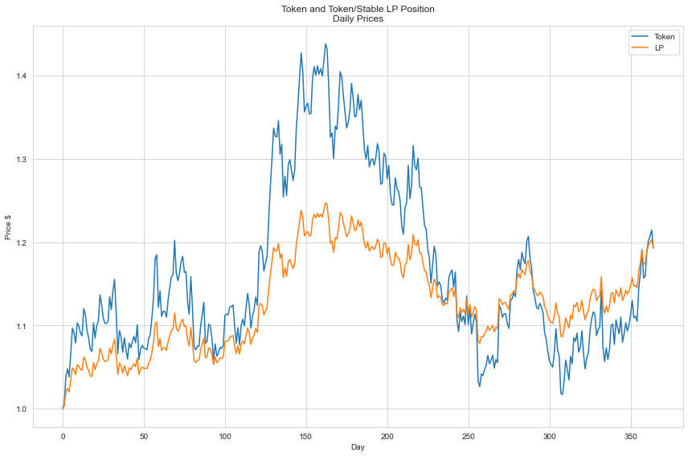
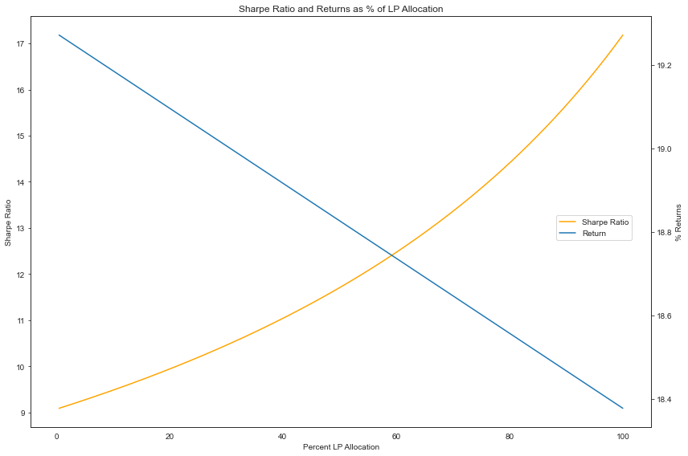

The Sharpe Ratio and Crypto
How to be a boomer portfolio manager in crypto
Richard Craig of Numerai was on the Blockworks podcast and mentioned one of the reasons he sold his ETH was that the Sharpe Ratio was so low. This had me thinking that even with the return most have had holding different tokens, on a risk adjusted basis that portfolio managers use, this actually might not be that good. The most basic metric for risk adjusted returns is the Sharpe Ratio.
The Sharpe Ratio is a way of getting one's "risk adjusted return" of something. The way portfolio managers traditionally measure risk is by the volatility measured as the standard deviation in the daily returns. It is given as: (return of the portfolio - risk free return)/standard deviation of returns.
The Sharpe Ratio is limited in its ability to measure risk, as it only uses the volatility of returns which isn't great, especially for crypto :) But it makes sense for those without long time horizons who want security in their money or maybe they have high blood pressure and don't want to worry about price charts so much.
Luckily crypto has just the solution for the portfolio manager to limit volatility and still get returns that would make even QQQ in 2021 blush. Enter AMM LP positions like in Uniswap, specifically in token/stable pairs.
For the giga brains 🧠 there is also this article from Paradigm about removing volatility drag from your crypto portfolio https://research.paradigm.xyz/uniswaps-alchemy
First let's look at Sharpe Ratios for a theoretical crypto currency that went up 19.25% over the year but with a standard deviation (σ) of returns at 0.02%. This would be a great return for a stock and the Sharpe Ratio of 7.66 reflects that great return.
Now let's look at an LP position between that same imaginary token, and a stable coin with an APY of 9.2% which would be abysmal, but for this imaginary token it I made it so the return of this LP position will be exactly the same as holding the token, so either way we are making a 19.25% return this year. The Sharpe Ratio for this LP position with the exact same return is... 18.09 which is beyond amazing.
So how did we increase our Sharpe Ratio with the same return? We reduced the standard deviation. Let's look at the daily price charts to compare.
Here is the token daily prices and LP prices which we can see aren't as volatile:
Token prices shown as much more volatile while LP is more muted and steadily increasing by accumulating trade fees as APY
While the LP position does decrease your "risk" defined as volatility, we can see it does limit your upside. So now imagine you assemble a portfolio with a certain percentage of your holdings in the token directly, and some in an LP position of that token and a stable.
This chart shows both the returns and Sharpe Ratios plotted with the x axis as the % of your portfolio you allocate to the LP position. I lowered the yield of the LP to an even more horrendous 5% to show a lower overall return and the inverse relationship with the Sharpe.
Sharpe Ratio and overall return for a portfolio with a percentage in a token/stable LP. Sharpe Ratio has an inverse relationship with overall return
It should be noted that this research was done for an imaginary token with only a 20% return. If your token 10xs you will definitely wish you didn't LP. But given how everything is down over the past year, LPing would have been a better idea than just hodling. (See my post on leverage if you wanna get even more fancy)